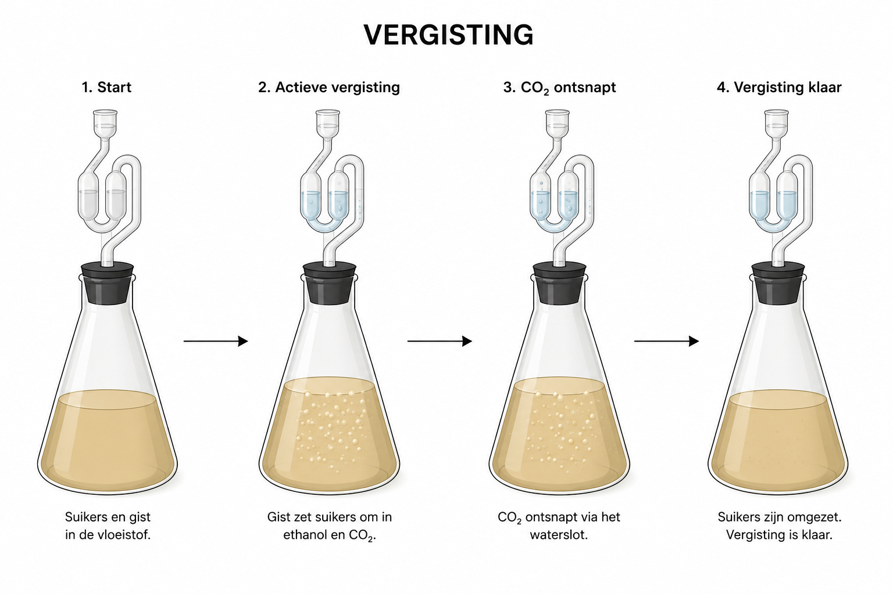

Hier staat de praktische uitvoering van het bio-ethanol experiment. De benodigde materialen, de exacte bereidingswijze en een foto van de proefopstelling zijn hieronder samengebracht.

© 2026 Meesterproef. Alle rechten voorbehouden. g3mBV